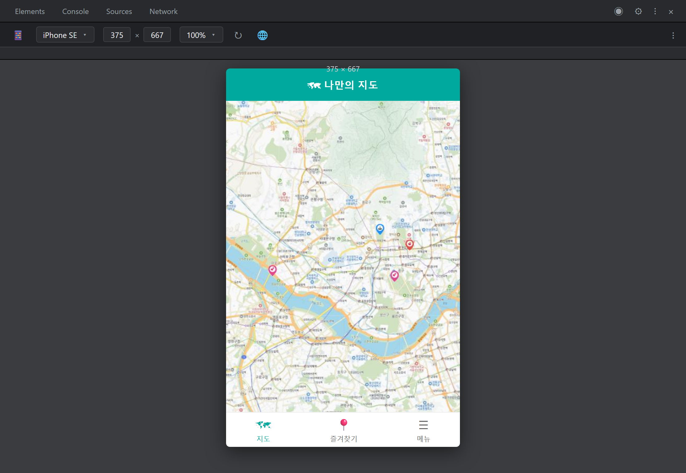
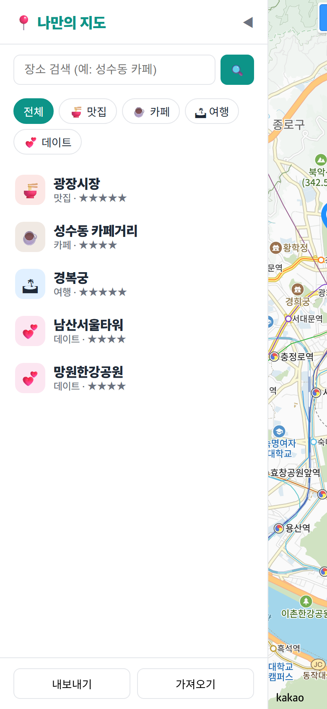
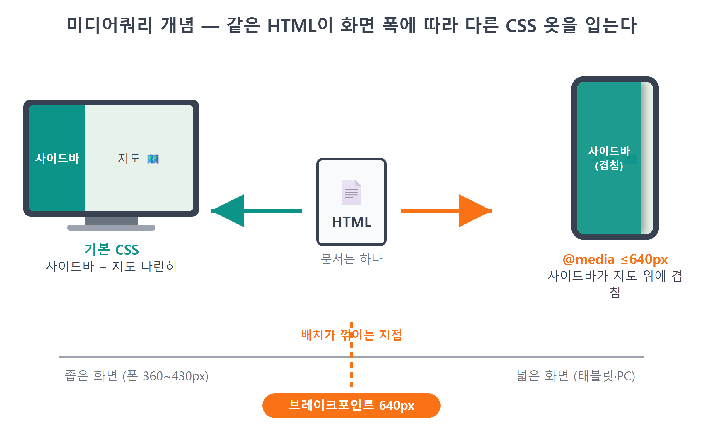
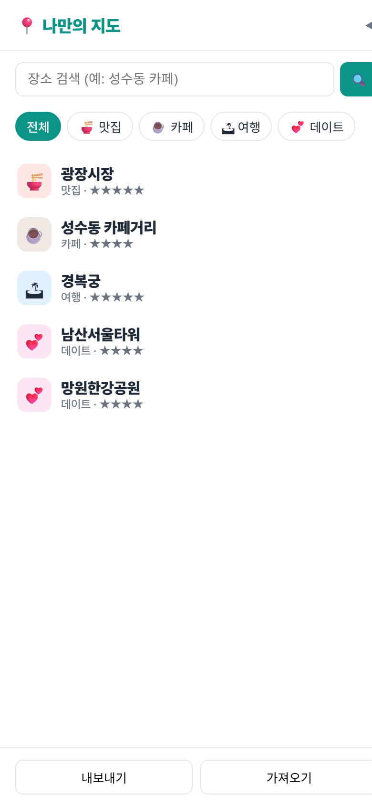
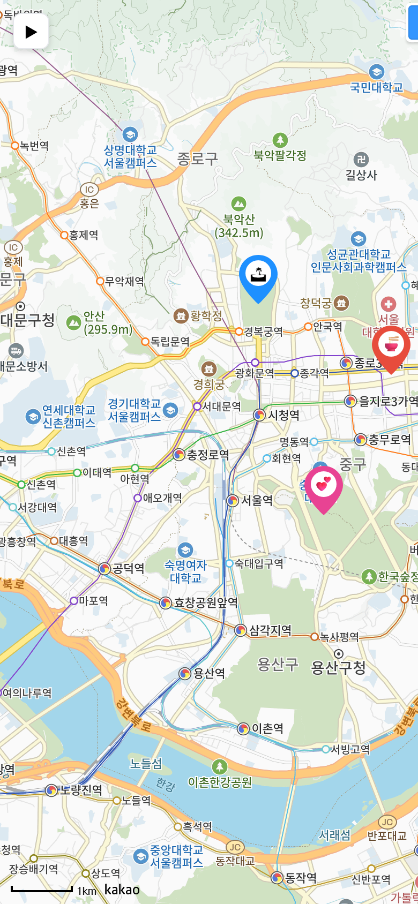
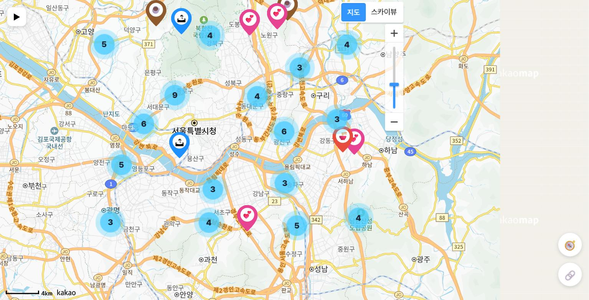
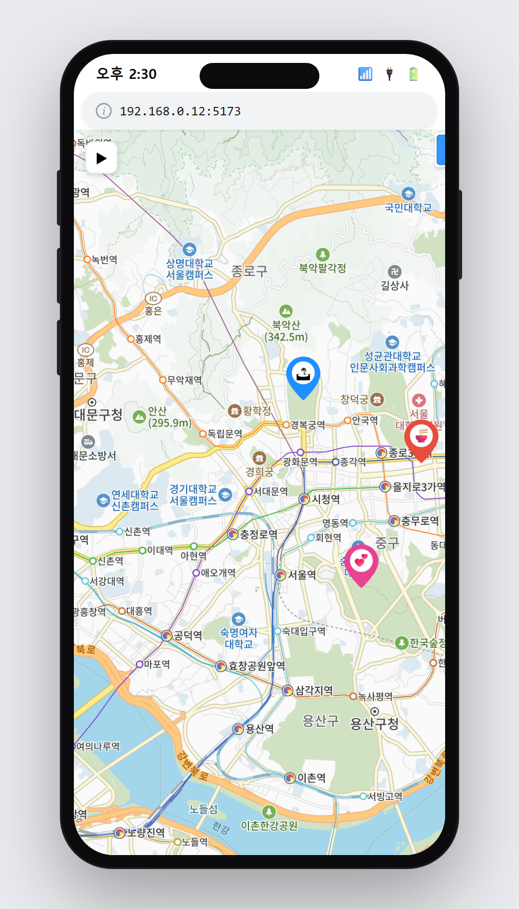

23장 모바일 대응¶
이 장에서 배우는 것
- 폰 없이 폰 화면을 테스트하는 개발자도구 디바이스 모드를 익힙니다
- 미디어쿼리(
@media)로 화면 폭에 따라 다른 CSS를 적용합니다 - 사이드바 접기/펼치기를 만들고
collapsed클래스와 CSS 트랜지션을 배웁니다 - 컨테이너 크기가 바뀐 것을 카카오지도에 알리는 relayout()과, 그걸 몰라서 생긴 버그를 고칩니다
- 터치 시뮬레이션과 실제 스마트폰 접속으로 모바일 동작을 확인합니다
22장까지 달려온 우리의 지도 앱은 이제 어엿한 서비스의 모습을 갖췄습니다. 검색하고, 추가하고, 별점을 매기고, 저장하고, 공유하고, 장소가 백 개라도 클러스터로 깔끔하게 묶입니다. 슬슬 친구에게 자랑하고 싶어지죠. 그런데 잠깐 상상해 보세요. 다음 장에서 배포를 마치고 친구에게 링크를 보냈습니다. 친구는 그 링크를 어디서 열까요? 십중팔구 스마트폰입니다. 통계적으로도 요즘 웹 트래픽의 절반 이상이 모바일에서 나옵니다. 우리는 지금까지 널찍한 PC 모니터에서만 앱을 만들어 왔는데, 정작 첫 관객은 손바닥만 한 화면으로 들어오는 겁니다.
폰 화면에서 우리 앱이 어떻게 보일지, 열어 보기 전엔 모릅니다. 그리고 미리 말씀드리면, 지금 상태로는 꽤 민망한 모습이 나옵니다. 320픽셀짜리 고정 폭 사이드바가 폰 화면의 대부분을 잡아먹고, 지도는 오른쪽에 가늘게 끼어 있는 신세가 되거든요. 이 장에서는 이 문제를 반응형 웹이라는 개념으로 해결합니다. 화면이 넓으면 넓은 대로, 좁으면 좁은 대로 앱이 스스로 모습을 바꾸게 만드는 것이죠. 그 과정에서 CSS의 미디어쿼리, 사이드바 접기 버튼, 그리고 "지도가 반쪽만 그려지는" 흥미로운 버그와 그 해결까지 경험하게 됩니다. 배포 전 마지막 담금질, 시작해 봅시다.
23.1 폰 없이 폰 화면 보기 — 디바이스 모드¶
모바일 대응의 첫 관문은 의외로 CSS가 아니라 테스트 방법입니다. 코드를 고칠 때마다 폰을 꺼내 접속할 수는 없으니까요. 다행히 크롬 개발자도구에는 PC 브라우저 안에서 스마트폰 화면을 흉내 내는 디바이스 모드(Device Mode)가 있습니다.
npm run dev로 앱을 띄운 상태에서 따라해 보세요.
- 브라우저에서 ++f12++ 를 눌러 개발자도구를 엽니다.
- 개발자도구 왼쪽 위, 화살표 아이콘 옆의 📱 모양 아이콘(기기 툴바 전환)을 클릭합니다. 단축키는 ++ctrl+shift+m++ 입니다.
- 화면 상단에 기기 선택 메뉴가 나타납니다. iPhone SE나 Galaxy S20 Ultra 같은 프리셋을 골라 보세요.

기기를 고르는 순간 화면이 좁고 길쭉한 폰 비율로 바뀝니다. iPhone SE 기준으로 폭이 375픽셀인데, 우리 사이드바는 --sidebar-w: 320px 고정 폭이었죠. 375 중에 320을 사이드바가 가져가니, 지도에게 남는 건 겨우 55픽셀. 지도라고 부르기도 민망한 세로 띠 하나가 남습니다. 검색창과 필터 버튼도 비좁게 구겨져 있고요.

이 처참한 화면이 오늘의 출발점입니다. 문제를 눈으로 확인했으니 이제 고칠 수 있습니다.
💡 팁
디바이스 모드가 흉내 내는 건 화면 크기·터치·기기 정보 정도입니다. 실제 폰의 성능, 브라우저 버전, 통신 환경까지 똑같지는 않아요. 그래서 개발 중에는 디바이스 모드로 빠르게 확인하고, 배포 전에 한 번은 진짜 폰으로 열어 보는 것이 정석입니다. 진짜 폰으로 여는 방법은 23.5절에서 다룹니다.
한 가지 다행인 점도 짚고 갑시다. index.html의 <head>에는 처음부터 이런 줄이 있었습니다.
Vite가 프로젝트를 만들 때 넣어 준 뷰포트1 설정입니다. 이 줄이 없으면 모바일 브라우저는 "이 페이지는 PC용이겠거니" 하고 980픽셀짜리 가상 화면에 페이지를 그린 뒤 폰 크기로 축소해 버립니다. 글자가 개미만 해지는 옛날 웹사이트들이 바로 그 경우죠. 이 줄이 있어야 "기기의 실제 폭을 기준으로 그려라"가 되어, 이제부터 작성할 미디어쿼리가 의도대로 동작합니다. 우리가 한 일은 없지만, 도구가 깔아 둔 기본기를 알아보는 것도 실력입니다.
23.2 미디어쿼리 — 화면 폭에 따라 옷 갈아입기¶
문제의 본질을 정리해 봅시다. 사이드바와 지도가 옆으로 나란히 서는 배치는 넓은 화면에서는 훌륭하지만 좁은 화면에서는 재앙입니다. 그렇다고 모바일용 HTML을 따로 만들 수는 없습니다. 파일이 두 벌이 되는 순간 기능 하나 고칠 때마다 두 곳을 고쳐야 하니까요. 우리가 원하는 건 이겁니다. HTML은 한 벌, CSS만 화면 폭에 따라 갈아입기.
CSS에는 정확히 이 일을 하는 문법이 있습니다. 미디어쿼리(media query)입니다.
@media (max-width: 640px)는 CSS에게 거는 조건문입니다. "화면 폭이 640픽셀 이하인가?"가 참일 때만 중괄호 안의 규칙이 살아나고, 넓은 화면에서는 통째로 없는 셈 칩니다. 이때 기준이 되는 640px 같은 값을 브레이크포인트(breakpoint)2, 즉 배치가 꺾이는 지점이라고 부릅니다. 폰은 대부분 360~430px, 태블릿 세로는 768px 언저리이니, 640px은 "폰이면 확실히 걸리고 태블릿부터는 PC 배치"가 되는 무난한 경계선입니다.

그럼 좁은 화면에서는 어떤 배치가 좋을까요? 카카오맵이나 구글맵 모바일 화면을 떠올려 보세요. 지도가 화면 전체를 차지하고, 목록은 필요할 때 지도 위로 미끄러져 나오는 서랍이 됩니다. 옆자리를 차지하며 지도를 밀어내는 게 아니라, 지도 위에 겹쳐서 떠 있는 거죠. 우리도 이 방식으로 갑니다. 설계가 섰으니 Claude Code에게 시킬 차례입니다.
🗣 이렇게 시키세요
앱을 모바일에 대응시켜줘. 화면 폭 640px 이하일 때는 ① 사이드바가 지도를 옆으로 밀어내지 말고 position: absolute로 지도 위에 겹치게 하고, 폭은 화면의 84% 정도로 해줘. ② 겹쳐 있다는 게 보이도록 사이드바 오른쪽에 그림자를 넣어줘. ③ 상세 패널은 화면 아래쪽에 좌우로 넓게 붙여줘. HTML은 건드리지 말고 style.css의 미디어쿼리로만 해결해줘.
"HTML은 건드리지 말고 CSS로만"이라는 제약을 명시한 것에 주목하세요. 이런 제약이 없으면 AI가 모바일용 마크업을 새로 짜는 큰 공사를 벌일 수도 있습니다. 우리가 원하는 건 옷만 갈아입히는 작은 수술이니, 수술 범위를 프롬프트에 못 박아 두는 겁니다.
Claude Code가 style.css 맨 아래에 추가한 코드입니다.
/* ── 모바일 ────────────────────────────── */
@media (max-width: 640px) {
:root { --sidebar-w: 84vw; }
#sidebar { position: absolute; left: 0; top: 0; box-shadow: 4px 0 16px rgb(0 0 0 / 0.12); }
#detail-panel { left: 12px; width: auto; top: auto; bottom: 12px; }
}
겨우 다섯 줄인데, 한 줄 한 줄이 알찹니다.
:root { --sidebar-w: 84vw; }— 우리 사이드바 폭은 처음부터--sidebar-w라는 CSS 변수 하나로 관리돼 왔습니다. 그래서 모바일에서는 그 변수 값만84vw로 바꿔치기하면, 이 변수를 쓰는 모든 규칙(width,min-width, 잠시 뒤 볼 접기 규칙까지)이 한꺼번에 따라옵니다.vw는 viewport width의 약자로,84vw는 "화면 폭의 84%"입니다. 픽셀 고정값과 달리 어떤 폰에서든 오른쪽에 지도가 빼꼼 보일 만큼의 틈을 남겨 주죠. 값 하나만 바꿨는데 전체가 맞춰 움직인다 — 12장에서 배운 "한 곳에서 관리"의 힘을 CSS에서 다시 확인하는 순간입니다.position: absolute— 이 한 줄이 배치의 성격을 바꿉니다. 기본 상태의 사이드바는 flex 컨테이너의 한 자리를 차지하며 지도를 옆으로 밀어내는 존재였습니다.absolute가 되면 문서의 자리 배치에서 빠져나와 부모(#app) 기준 좌표 위에 떠 있는 존재가 됩니다. 자리를 차지하지 않으니 지도는 화면 전체를 쓰고, 사이드바는 그 위에 겹쳐 뜨는 거죠.box-shadow— 겹쳐 떠 있다는 사실을 눈으로 알려 주는 그림자입니다. 그림자가 없으면 사이드바와 지도가 한 평면처럼 보여서, 사용자가 "이건 닫을 수 있는 서랍"이라는 걸 알아차리기 어렵습니다. 시각적 디테일 하나가 UI의 문법을 전달하는 좋은 예입니다.#detail-panel규칙 — 19장에서 만든 상세 패널은 PC에서 오른쪽 위에 280px 폭으로 떠 있었습니다. 모바일에서는left: 12px과width: auto로 좌우에 모두 붙여 넓게 펴고,top: auto; bottom: 12px으로 화면 아래에 내려 앉힙니다. 모바일 앱에서 흔히 보는 바텀 시트 스타일이죠. 엄지손가락이 닿기 쉬운 아래쪽에 조작 UI를 두는 것은 모바일 UI의 오랜 관습입니다.
저장하고 디바이스 모드 화면을 보세요. 지도가 화면 전체에 시원하게 깔리고, 사이드바가 그 위에 그림자를 드리우며 떠 있으면 성공입니다. 그림 23.2와 비교하면 다른 앱이라고 해도 믿을 정도입니다.

⚠️ 주의
미디어쿼리를 적용했는데 디바이스 모드에서 아무 변화가 없다면 세 가지를 확인하세요. ① 디바이스 모드의 화면 폭이 정말 640px 이하인지(상단 수치 확인), ② @media 블록이 기존 규칙보다 아래에 있는지(같은 우선순위면 나중 규칙이 이깁니다), ③ 오타로 max-width가 min-width로 되어 있지 않은지. 특히 ③은 조건이 정반대가 되는 흔한 실수입니다.
23.3 사이드바 접기/펼치기¶
배치는 좋아졌지만 결정적인 문제가 남았습니다. 사이드바가 지도 위에 떠 있을 뿐, 치울 방법이 없습니다. 화면의 84%를 덮고 있으니 지도를 보려면 사이드바를 접을 수 있어야죠. 사실 이 기능은 모바일만의 것이 아닙니다. PC에서도 지도를 넓게 보고 싶을 때 사이드바를 접고 싶을 때가 있으니, 접기/펼치기는 공통 기능으로 만들고 모바일에서 특히 빛나게 하겠습니다.
🗣 이렇게 시키세요
사이드바 접기/펼치기를 만들어줘. ① 사이드바 헤더 오른쪽에 ◀ 접기 버튼, 지도 왼쪽 위에 ▶ 펼치기 버튼을 두고, 펼치기 버튼은 사이드바가 열려 있을 땐 숨겨줘. ② 접기는 sidebar에 collapsed 클래스를 붙이는 방식으로 하고, CSS 트랜지션으로 왼쪽으로 미끄러지듯 사라지게 해줘. ③ 모바일 미디어쿼리에서도 확실히 화면 밖으로 나가게 처리해줘.
먼저 index.html에 버튼 두 개가 생겼습니다.
<header id="sidebar-header">
<h1>📍 나만의 지도</h1>
<button id="btn-collapse" title="사이드바 접기">◀</button>
</header>
...
<main id="map-wrap">
<div id="map"></div>
<button id="btn-expand" title="사이드바 열기" hidden>▶</button>
#btn-expand에 붙은 hidden 속성을 눈여겨보세요. 처음에는 사이드바가 열려 있으니 펼치기 버튼은 숨긴 채 시작합니다. HTML 표준 속성 hidden은 자바스크립트에서 요소.hidden = true/false로 켜고 끌 수 있어서, 토스트나 다이얼로그를 숨길 때 이미 여러 번 써 온 방식입니다.
다음은 style.css입니다. 접힘의 핵심은 기본 사이드바 규칙에 있던 두 줄과, 새로 추가된 한 줄입니다.
#sidebar {
width: var(--sidebar-w);
/* ...기존 규칙... */
transition: margin-left 0.25s ease;
}
#sidebar.collapsed { margin-left: calc(-1 * var(--sidebar-w)); }
@media (max-width: 640px) {
#sidebar.collapsed { margin-left: -100vw; }
}
접기의 원리가 재미있습니다. display: none으로 확 꺼 버리는 게 아니라, 왼쪽 마진을 자기 폭만큼 음수로 줍니다. calc(-1 * var(--sidebar-w))는 "내 폭이 320px이면 -320px"이라는 뜻이죠. 마진이 -320px이 되면 사이드바는 화면 왼쪽 바깥으로 정확히 자기 몸만큼 밀려나 시야에서 사라집니다. 왜 이렇게 돌아갈까요? display: none은 있음/없음의 스위치라 중간 상태가 없어서 트랜지션이 불가능하기 때문입니다. 반면 margin-left는 0에서 -320까지 이어지는 숫자이므로, transition: margin-left 0.25s ease가 그 사이를 0.25초 동안 부드럽게 이어 줍니다. 서랍이 스르륵 닫히는 애니메이션이 CSS 두 줄에서 나오는 겁니다.
모바일 미디어쿼리 안의 margin-left: -100vw도 같은 원리입니다. 모바일 폭은 84vw니까 -84vw면 충분하지 않냐고요? 맞습니다만, AI는 여기에 -100vw, 즉 "화면 폭 전체만큼"이라는 더 확실한 값을 골랐습니다. 그림자까지 포함해 어떤 경우에도 잔상이 남지 않는 안전한 선택이죠.
이제 버튼과 클래스를 잇는 자바스크립트입니다. sidebar.js의 initSidebar()에 두 줄, 그리고 새 함수 하나가 추가됐습니다.
document.getElementById('btn-collapse').addEventListener('click', () => toggleSidebar(false));
document.getElementById('btn-expand').addEventListener('click', () => toggleSidebar(true));
export function toggleSidebar(open) {
document.getElementById('sidebar').classList.toggle('collapsed', !open);
document.getElementById('btn-expand').hidden = open;
}
toggleSidebar(open)는 "사이드바를 열어라/닫아라"를 매개변수 하나로 받는 함수입니다. 첫 줄의 classList.toggle('collapsed', !open)은 14장에서 필터 버튼의 active를 다룰 때 만난 그 문법입니다. 두 번째 인자가 true면 클래스를 붙이고 false면 뗀다고 했죠. 열라는 명령(open이 true)이면 !open은 false가 되어 collapsed가 떨어지고, 닫으라는 명령이면 붙습니다. 둘째 줄은 펼치기 버튼의 표시 상태를 사이드바와 반대로 맞춥니다. 사이드바가 열려 있으면(open === true) ▶ 버튼은 숨고, 접혀 있으면 나타납니다. "지금 열려 있는가"라는 상태 하나에서 클래스와 버튼 표시가 모두 계산되어 나오는, 우리에게 익숙한 단방향 그림입니다.
저장하고 눌러 봅시다. ◀를 누르면 사이드바가 왼쪽으로 스르륵 사라지고 지도 왼쪽 위에 ▶ 버튼이 나타납니다. ▶를 누르면 다시 스르륵 돌아오고요.

23.4 지도가 반쪽만 나오는 버그 — relayout()¶
그런데 PC 화면(디바이스 모드를 끈 상태)에서 접기를 눌러 보면 이상한 광경을 만나게 됩니다. 사이드바가 사라지면서 지도 영역이 넓어졌는데, 새로 드러난 오른쪽 부분이 회색으로 텅 비어 있습니다. 지도를 드래그하면 그제야 타일이 채워지기도 하고요. 뭔가 덜 그려진 느낌, 9장에서 만났던 회색 화면의 데자뷰입니다.

원인을 추리해 봅시다. 카카오지도는 처음 만들어질 때 컨테이너(#map)의 크기를 재고, 딱 그 크기만큼의 지도 타일을 준비해 그립니다. 그런데 CSS가 사이드바를 치워서 컨테이너가 넓어져도, 지도는 그 사실을 모릅니다. CSS의 변화가 자바스크립트 객체에게 자동으로 통보되지는 않으니까요. 지도 입장에서 세상은 여전히 예전 크기이고, 새로 생긴 땅은 자기 관할 밖이라 회색으로 남는 겁니다.
이럴 때 바이브코딩의 정석은 원인 분석문을 쓰는 게 아니라, 증상을 본 그대로 말하는 것입니다.
🗣 이렇게 시키세요
사이드바를 접으면 지도가 넓어지는데, 새로 드러난 오른쪽 영역이 회색으로 비어 있어. 창 크기를 바꾸거나 지도를 드래그해야 그제야 채워져. 사이드바를 접거나 펼친 뒤에 지도가 새 크기에 맞게 다시 그려지도록 고쳐줘.
실제로 이 앱을 만들 때 AI가 처음 내놓은 해법은 kakao.maps.event.trigger(map, 'resize'), 즉 지도에게 "크기가 바뀌었다"는 이벤트를 쏘는 방식이었습니다. 얼핏 동작하는 듯했지만 새로 드러난 영역의 타일이 여전히 안 그려지는 경우가 남았습니다. 증상이 남았다고 다시 말하자, AI는 카카오지도 API가 바로 이 상황을 위해 마련해 둔 정식 메서드 relayout()으로 코드를 고쳤습니다. relayout()은 "컨테이너 크기를 다시 재서 지도를 새로 배치하라"는 명령으로, 문서에도 "지도를 표시하는 HTML 요소의 크기를 변경한 후 호출해야 한다"고 안내되어 있는 정공법입니다. 한 번에 완벽한 답이 안 나와도, 증상을 다시 들려주면 더 나은 답으로 수렴한다 — AI와 일하는 감각이 이런 겁니다.
고쳐진 toggleSidebar()의 최종 모습입니다.
export function toggleSidebar(open) {
document.getElementById('sidebar').classList.toggle('collapsed', !open);
document.getElementById('btn-expand').hidden = open;
// 지도 크기가 변하므로 카카오 지도에 알려준다 (CSS 트랜지션 0.25s가 끝난 뒤)
setTimeout(() => window.__map.relayout(), 300);
}
마지막 줄을 뜯어봅시다. 왜 relayout()을 바로 부르지 않고 setTimeout으로 300밀리초 뒤에 부를까요? 사이드바의 트랜지션이 0.25초, 즉 250밀리초 동안 진행되기 때문입니다. 클래스를 토글한 직후는 사이드바가 아직 미끄러지는 중간이라, 그 시점에 크기를 재면 어중간한 크기가 잡힙니다. 애니메이션이 완전히 끝난 뒤(250ms + 여유 50ms)에 재야 최종 크기가 나오죠. CSS 애니메이션과 자바스크립트가 협업할 때 자주 등장하는 타이밍 감각입니다.
window.__map도 궁금할 겁니다. 지도 객체는 main.js가 만들어서 갖고 있는데, sidebar.js에서도 그 지도에게 relayout()을 말해야 합니다. 그래서 main.js가 지도를 만든 직후 전역 창문에 하나 걸어 둔 것이죠.
window에 값을 붙이면 어느 모듈에서나 접근할 수 있습니다. 남용하면 "누가 언제 바꿨는지 모르는" 전역 변수 지옥이 되지만, 앱에 단 하나뿐이고 바뀔 일 없는 지도 객체 하나를 공유하는 정도는 실용적인 타협입니다. 이름 앞의 밑줄 두 개(__map)는 "앱 내부용이니 함부로 만지지 마세요"라는 관례적 표시고요.
이제 다시 접고 펼쳐 보세요. 사이드바가 미끄러져 나간 직후 지도가 넓어진 영역까지 매끈하게 채워집니다. PC에서도, 디바이스 모드에서도요.
⚠️ 주의
창 크기를 바꾸거나 컨테이너 크기를 코드로 바꾼 뒤 지도가 이상하게 보이면 십중팔구 relayout() 누락입니다. 반대로 relayout()을 불렀는데도 회색이 남는다면 타이밍 문제입니다. 크기 변화가 끝난 뒤에 부르고 있는지, 트랜지션 시간보다 setTimeout 지연이 긴지 확인하세요.
23.5 터치로 확인하기¶
레이아웃은 끝났습니다. 마지막 점검은 터치입니다. 마우스의 클릭·드래그가 손가락의 탭·스와이프로 바뀌어도 앱이 다 되는지 확인해야죠.
좋은 소식부터. 디바이스 모드에서는 마우스 커서가 동그란 점으로 바뀌는데, 이 상태의 조작은 브라우저가 터치 이벤트로 바꿔서 페이지에 전달합니다. 그리고 카카오지도 SDK는 터치 대응이 이미 내장되어 있어서, 한 손가락 드래그로 지도 이동, 두 손가락 벌리기(핀치)로 확대·축소가 그냥 됩니다. 디바이스 모드에서 ++shift++ 를 누른 채 드래그하면 두 손가락 핀치를 흉내 낼 수 있으니 확대·축소도 시험해 보세요. 우리가 만든 기능들도 하나씩 눌러 봅니다. 필터 버튼 탭, 목록 탭 → 지도 이동, 지도 탭 → 추가 다이얼로그, 마커 탭 → 상세 패널, 별점 탭. 전부 click 이벤트 기반인데, 모바일 브라우저는 탭을 클릭으로 번역해 주므로 손대지 않아도 잘 동작합니다.
그래도 눈여겨볼 대목은 있습니다. 버튼 크기입니다. 마우스 포인터는 1픽셀짜리 정밀 도구지만 손가락 접촉면은 지름 1센티미터가 넘습니다. 그래서 애플·구글의 디자인 가이드는 터치 대상을 최소 44~48픽셀로 권장하죠. 우리 앱의 내 위치·공유 버튼은 42px, 필터 버튼도 여백 포함 30px대라 아슬아슬하게 쓸 만한 수준입니다. 디바이스 모드의 동그란 커서로 필터 버튼을 연달아 눌러 보고, 자꾸 빗나간다 싶으면 "모바일에서 필터 버튼 터치 영역을 키워줘"라고 시키면 됩니다. 미디어쿼리 안에서 padding만 키우면 되는 일입니다.
마무리는 진짜 폰입니다. 배포 전이라도 같은 와이파이에 물려 있으면 폰에서 개발 서버에 접속할 수 있습니다.
- 개발 서버를 이렇게 다시 띄웁니다:
npm run dev -- --host.--host는 "내 컴퓨터 밖에서의 접속도 받아라"라는 뜻으로, 터미널에Local:주소 외에Network: http://192.168.x.x:5173/같은 주소가 추가로 표시됩니다. 처음 띄울 때 윈도우 방화벽 허용 창이 뜨면 허용해 주세요. - 폰 브라우저에서 그
Network:주소를 입력해 접속합니다.
그런데 지도가 안 뜨고 콘솔에 403이 찍힐 겁니다. 놀라지 마세요. 7장에서 배운 그 이유입니다. 카카오 개발자 콘솔에는 http://localhost:5173만 등록되어 있는데, 폰은 http://192.168.x.x:5173이라는 다른 주소로 접속했으니 카카오가 문전박대한 것이죠. developers.kakao.com → 내 애플리케이션 → 앱 설정 → 플랫폼 → Web에 터미널이 알려 준 Network: 주소를 추가하면 폰에서도 지도가 뜹니다. 우리 앱을 진짜 손가락으로 조작해 보는 첫 순간입니다. 지도를 휙휙 넘기고, 핀치로 줌하고, 사이드바를 접었다 펴 보세요.

💡 팁
개발용으로 등록한 192.168.x.x 주소는 공유기가 바뀌면 달라질 수 있고, 남에게 필요한 주소도 아닙니다. 테스트가 끝나면 카카오 콘솔에서 지워 두는 편이 깔끔합니다. 25장에서 진짜 배포 주소를 등록할 때 다시 이 화면을 만나게 됩니다.
23.6 마무리¶
이 장은 코드 양은 적었지만 "내 화면 밖의 사용자"를 처음으로 생각한 장입니다. 화면 폭이라는 조건에 CSS가 반응하게 만들고, CSS의 변화를 자바스크립트가 지도에게 통역해 주는 연결 고리까지 놓았습니다. 이제 이 앱은 어떤 화면에서 열려도 제 모습을 갖춥니다. 세상에 내보낼 준비가 끝났다는 뜻입니다.
📌 핵심 요약
- 개발자도구의 디바이스 모드(++ctrl+shift+m++)로 폰 없이 모바일 화면과 터치를 테스트할 수 있습니다.
- 미디어쿼리
@media (max-width: 640px)는 화면 폭이 조건에 맞을 때만 CSS를 적용합니다. HTML은 한 벌, CSS만 갈아입힙니다. - 모바일에서는 사이드바를
position: absolute로 지도 위에 겹치게 하고, CSS 변수--sidebar-w하나만 재정의해 폭을 바꿉니다. - 접기는
collapsed클래스 + 음수 margin-left +transition의 합작입니다.display: none은 애니메이션이 안 되기 때문입니다. - 컨테이너 크기가 바뀌면 카카오지도는 스스로 모릅니다. 트랜지션이 끝난 뒤
map.relayout()을 호출해 알려 줘야 합니다.
🤔 생각해보기
Q1. 접힌 사이드바를 display: none이 아니라 음수 margin-left로 처리한 이유는 무엇이었나요? 만약 display: none으로 바꾸면 사용자 눈에 어떤 차이가 생길까요?
✍️ ________
Q2. toggleSidebar()의 setTimeout 지연을 300ms에서 0ms로 바꾸면 어떤 문제가 생길까요? 트랜지션 시간(0.25s)과 연결해 설명해 보세요.
✍️ ________
✏️ 연습 문제
- 디바이스 모드에서 기기를 iPad(768px)로 바꿔 보세요. 미디어쿼리가 적용되나요, 안 되나요? 그 이유를 브레이크포인트 값으로 설명해 보세요.
- 디바이스 모드 상단의 "반응형" 모드에서 화면 폭을 손으로 천천히 줄여 보세요. 정확히 몇 픽셀에서 배치가 꺾이는지 확인하고, 640이라는 숫자가 CSS 어디에서 왔는지 짚어 보세요.
- Claude Code에게 시켜 모바일에서는 앱이 사이드바가 접힌 상태로 시작하게 만들어 보세요. (힌트: 화면 폭은
window.matchMedia('(max-width: 640px)')로 알 수 있습니다.) 다 해 봤다면 커밋하거나, 마음에 안 들면 git으로 되돌리세요.
🔎 더 찾아보기
반응형 웹 디자인 (Responsive Web Design)— 오늘 배운 기법들의 정식 명칭. 유동 그리드·유동 이미지·미디어쿼리 3요소로 정리됩니다.prefers-color-scheme— 화면 폭 말고 "사용자가 다크 모드인가"를 묻는 미디어쿼리. 다크 모드 대응의 출발점입니다.ResizeObserver— 요소 크기 변화를 자동 감지하는 브라우저 API.setTimeout없이relayout()시점을 잡는 세련된 방법입니다.PWA (Progressive Web App)— 웹앱을 홈 화면에 설치해 진짜 앱처럼 쓰게 하는 기술. 우리 지도 앱의 다음 진화 후보입니다.
다음 장 예고 — 앱은 완성됐습니다. 이제 세상에 공개할 차례입니다. 24장에서는 지금까지 커밋해 온 우리 저장소를 GitHub에 올립니다.
gh repo create한 줄로 원격 저장소를 만들고,.env와node_modules가 절대 따라 올라가지 않도록.gitignore를 재점검하고, 첫git push로 내 코드가 인터넷에 존재하게 되는 순간을 경험합니다.